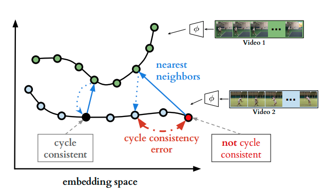

論文情報
・Debidatta Dwibedi et al.
概要
異なる動画においても，同じ動作の場合特徴空間上で近くなるように学習させることで，似た動作の動画同士を同期できるようなマッチングを実現．

手法
まず動画のペアにおいて，各フレームの埋め込み表現をエンコーダによって得る．このうち１つのフレームに注目したとき（下図の右下赤い点），ペア動画においてその埋め込み表現から最も近いフレームを選ぶ．同様にして元の動画からもうひとつ点を選んだとき，最初の赤い点にもどることが理想であるが，違うフレームが選ばれたときはそこでロスをとることによって正解に近づけていくことを考える．

しかし単純に上のように定義しただけでは損失関数の微分が不可能なため，勾配の計算ができない．そこでペア動画の各フレームにおいて距離空間に応じた重みを計算し，その重み付きの和を計算して，近似した近傍点を求める．同様に，近似した近傍点から元動画の各フレームの距離空間に応じた重みを計算し，その重み付きの和を計算することでロスをとる．

実験


新規性
動画ペアにおいて，似た動作同士を近づけるような表現学習の方法を提案．
コメント・メモ
編集日
2020/02/24